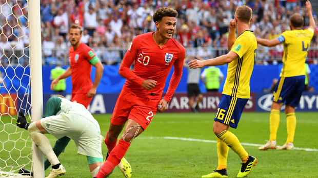

London - Tim nasional Inggris lolos ke semifinal Piala Dunia 2018 setelah mengalahkan Swedia dengan skor 2-0. Pangeran William mengucapkan selamat kepada Harry Kane dkk.
"Anda ingin membuat sejarah @England dan Anda melakukan hal itu. Ini adalah perjalanan #WorldCup yang luar biasa dan kami menikmati setiap menit," ujar akun Twitter Istana Kensington, Sabtu (7/7/2018).
Baca juga: Inggris ke Semifinal Usai Tekuk Swedia 2-0
Ini adalah cuitan Pangeran William karena dicantumkan tanda 'W' di akhir postingan. Saking optimisnya Inggris menang Piala Dunia, ia menuliskan 'Football's coming home'.
"Anda layak mendapatkan momen ini - Football's Coming Home! W," cuit William.
Seperti diketahui, lolosnya Inggris ke semifinal adalah yang kali pertama sejak Piala Dunia 1990 di Italia. Namun Inggris tak lolos ke final setelah dikalahkan Jerman Barat (kini Jerman) dengan skor 4-3 melalui adu penalti.

Dele Alli usai mencetak gol ke gawang Swedia.
Setelah 28 tahun penantian, tim besutan Gareth Southgate kembali lolos ke semifinal. Adalah sundulan Harry Maguire dan Dele Alli yang memantapkan langkah 'Three Lions' ke semifinal.
(dkp/dkp)